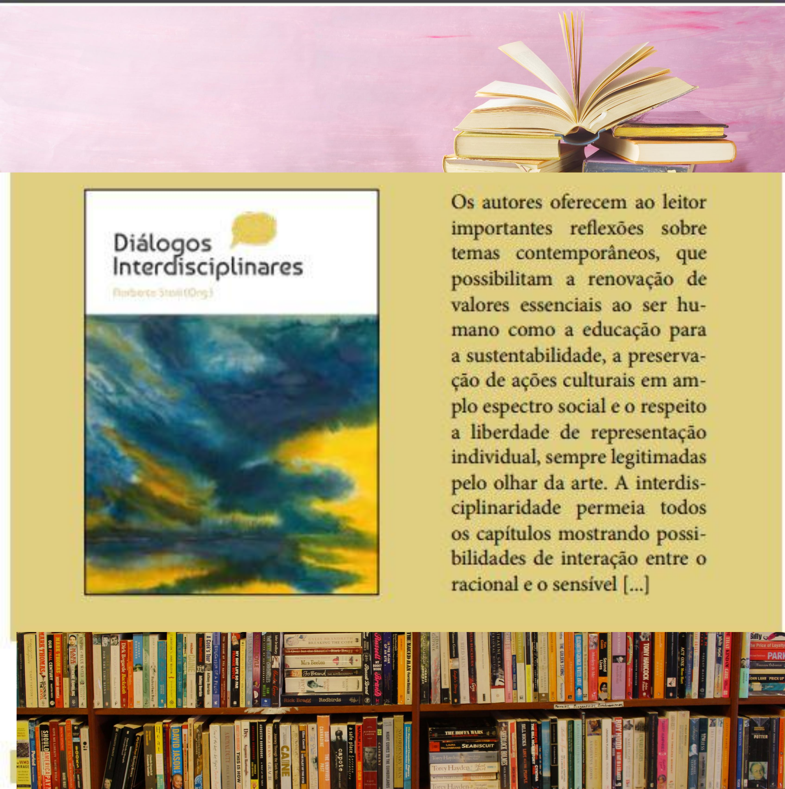

Livros Novos
167 -TEMPESTADE NO HORIZONTE, Roberto de Castro Gonçalves. São Paulo-/SP: Editora Fontenele, 2020, 256 p. NOVO (2)R$40,00

Figura 22 -Peso 0.364 kg
Dimensões 21 × 14 × 1.7 cm
Autor: Roberto de Castro Gonçalves
Páginas: 256
ISBN: 978-65-86227-11-6 (2012).
Compre Agora
146. DIÁRIO DE UMA QUASE MORTE. A VIDA É TRÁGICA, VIVA! Antônio Stélio. São Paulo- Rio de Janeiro/SP-RJ: LIVRE EXPRESSÃO EDITORA, 2012, 160 p.il. NOVO (5) R$ 32,00

Figura 22 -DIÁRIO DE UMA QUASE MORTE. A VIDA É TRÁGICA, VIVA! Antônio Stélio. (2012).
Compre Agora
144. CRÕNICAS DA PRAIA DO MEIO. Antônio Stélio. Natal/RN: EDIÇÕES SEBO VERMELHO, 2019, 99 p.il. NOVO (5) R$ 24,00

Figura 21 - Antônio Stélio.“CRÔNICAS DA PRAIA DO MEIO” (2019).
Compre Agora
 Autora: Sonia Maria Bufarah Tommasi >
Autora: Sonia Maria Bufarah Tommasi > Figura 20 -Autora: Sonia Maria Bufarah Tommasi , Pensando a arteterapia com arte, ciência e espiritualidadeTema: Arteterapia Tema: Artetarapia ISBN: 978-85-7585-673-4 Peso: 260 Gramas Tamanho: 14 x 21 cm Paginas: 220 Edição: 1ª Edição
Compre AgoraFigura 18 -Autoras: Irene Gaeta Arcuri e Monalisa Dibo , 142. Arteterapia e Mandalas - Uma Abordagem Junguiana oTema: Arteterapia ISBN: 978-85-7585-310-8 Tema: Arteterapia Peso: 0,699 Kg Páginas: 186 Tamanho: 21x28cm Edição: 1ª edição
Compre Agora Petho Sandor >
Petho Sandor > Figura 19 -Petho Sandor , 142. Técnicas de RelaxamentoTema: Arteterapia ISBN: 85-87516-45-0 Peso: 212 gramas Tamanho: 14 x 21 cm Páginas: 170 Edição: 4ª Edição Ano de Publicação: 1982.
Compre AgoraEste livro retrata a vida do artista Hélio Melo, amazonense, cuja obra está contextualizada numa época de fortes mudanças no paradigma do manejo da floresta amazônica e sua vocação econômica. Assim, seus desenhos mostram a floresta, seus mitos, como o mapinguari, a vida do seringueiro,a religião, a política, a fauna e a relação do homem com a floresta. Hélio melo usa as artes plásticas para demonstrar sua crítica ao sistema que destruía a floresta e explorava o coletor de látex. Assim produziu imagens originais, condizentes com a conjuntura histórica da Amazônia e do Acre. Sua obra então, passa a ser um veículo para mostrar sua oposição ao desmatamento e para valorizar a cultura dos povos da floresta.
 Rossini Castro>
Rossini Castro> Figura 9 -Rossini Castro, Ambiente Amazônico: A arte vivencial do artista Hélio Melo2013, 1ª edição. Edição do Autor, Rio Branco-AC.
Compre Agora123. AFORISMOS DE UM POETA DO ENVIRA. Antônio Stélio. Rio Branco-Acre: GLOBO, 2006, 89 p.il. NOVO (5) R$ 40,00

Figura 10 - Antônio Stélio.“AFORISMOS DE UM POETA DO ENVIRA” (2006).
Compre Agora
124. O AMOR É TRÁGICO, AME UM ENSAIO FILOSÓFICO. Antônio Stélio.Rio Branco-AC: 2009, 72 p. NOVO (3) R$ 40,00

Figura 10 -Antônio Stélio, O amor é trágico. Ame! Rio Branco-Acre: GLOBO, 2006, 89 p.il.
Compre Agora125. VOVÓ LEU NIETZSCHE: UM PASSEIO PELOS DITADOS POPULARES . Antônio Stélio. Rio Branco-Acre: GLOBO, 2006, 89 p.il. NOVO (5) R$ 40,00
Figura 10 - Antônio Stélio.“AFORISMOS DE UM POETA DO ENVIRA” (2006).
Compre Agora
124. O AMOR É TRÁGICO, AME UM ENSAIO FILOSÓFICO. Antônio Stélio.Rio Branco-AC: 2009, 72 p. NOVO (3) R$ 40,00
Figura 10 -Antônio Stélio, O amor é trágico. Ame! Rio Branco-Acre: GLOBO, 2006, 89 p.il.
Compre Agora147. ROSALINA MEU AMOR. Antônio Stélio. NATAL/RN: EDIÇÕES SEBO VERMELHO, 2016, 112 p.il. NOVO (5) R$ 24,00

Figura 22 - Antônio Stélio.“VOVÓ LEU NIETZSCHE” (2012).
Compre Agora
145. VOVÓ LEU NIETZSCHE. Antônio Stélio. Natal/RN: LIVRE EXPRESSÃO EDITORA, 2012, 112 p.il. NOVO (5) R$ 32,00

Figura 22 - Antônio Stélio.“VOVÓ LEU NIETZSCHE” (2012).
Compre Agora
 Autora: Irene Gaeta >
Autora: Irene Gaeta > Figura 20 -Autora: Irene Gaeta , 142. Arteterapia um Novo Campo do ConhecimentoTema: Arteterapia Tema: Arteterapia ISBN: 85-7585-176-4 Peso: 250 gramas Tamanho: 14 x 21 cm Páginas: 200 Edição: 1. Edição Ano de Publicação: 2006
Compre AgoraFigura 18 -Autora: Irene Gaeta , 142. Arteterapia e o Corpo Secreto oTema: Arteterapia Tema: Arteterapia ISBN: 85-7585-170-5 Peso: 200 gramas Tamanho: 14 x 21 cm Páginas: 140 Edição: 1. Edição Ano de Publicação: 2006
Compre Agora141. A última estrela tropical, de João Augusto. – SÃO PAULO: EDITORA PATUÁ, 2020. DE R$ 50,00 POR R$ 40,00 NOVO
.png)
Figura 16 João Augusto. 141. A última estrela tropical , São Paulo: editora PATUÁ,2020.
Compre Agora143. Arte-Terapia e Loucura l, Autora: Sonia Maria Bufarah Tommasi. –Tema: Arteterapia ISBN: 85-7585-108-X Peso: 390 gramas Tamanho: 14 x 21 cm Páginas: 316 Edição: 1. Edição Ano de Publicação: 2005 DE R$ 120,00 POR R$ 96,00 NOVO
Figura 17 Sonia Maria Bufarah Tommasi. 143. Arte-Terapia e Loucura , Tema: Arteterapia ISBN: 85-7585-108-X Peso: 390 gramas Tamanho: 14 x 21 cm Páginas: 316 Edição: 1. Edição Ano de Publicação: 2005.
Compre Agora139. PASSOS NO DIÁLOGO – IGREJA CATÓLICA E RELIGIÕES AFRO-BRASILEIRAS. HEITOR FRISOTTI – SÃO PAULO: PAULUS, 1996. R$ 20,00 NOVO (1) R$ 20,00
.png)
Figura 14 HEITOR FRISOTTI . 139. PASSOS NO DIÁLOGO – IGREJA CATÓLICA E RELIGIÕES AFRO-BRASILEIRAS. , São Paulo: Atabaque Cultura Negra e Teologia, 1996
Compre Agora140. UMA DÍVIDA, MUITAS DÍVIDAS – OS AFRO-BRASILEIROS QUEREM RECEBER. . ANTÕNIO APARECIDO DA SILVA, AFONSO MARIA LIGÓRIO SOARES, DAGOBERTO JOSÉ FONSECA, HEITOR FRIZOTTI, MARCOS RODRIGUES DA SILVA, PETRONILHA BEATRIZ GONÇALVES E SILVA, PHAMBU NGUMA BALDUINO, SILVIA REGINA DE LIMA SILVA E VILSON CAETANO DE SPUZA JÚNIOR, ATABAQUE CULTURA NEGRA E TEOLOGIA 1998. NOVO (1) R$ 20,00

Figura 14 Org. Vilson Caetano de Souza Júnior. UMA DÍVIDA, MUITAS DÍVIDAS – OS AFRO-BRASILEIROS QUEREM RECEBER. , São Paulo: Atabaque Cultura Negra e Teologia, 1998
Compre Agora121. ESCARAVELHO DA FLORESTA. Antônio Stélio. Rio DE Janeiro:Livre Expressão Editora, 2011. NOVO.

Figura 11 -Antônio Stélio, Escaravelho da Floresta Rio DE Janeiro:Livre Expressão Editora, 2011..
Compre Agora137. NOSSAS RAÍZES AFRICANAS. ORG. WILSON CAETANO DE SOUZA JÚNIOR. CENTRO ATABAQUE DE CULTURA NEGRA E TEOLOGIA. ISBN 85-904761-2-X . SÃO PAULO, 2004, 1ª EDIÇÃO. NOVO.

Figura 13 -ORG. WILSON CAETANO DE SOUZA JÚNIOR, NOSSAS RAÍZES AFRICANAS. CENTRO ATABAQUE DE CULTURA NEGRA E TEOLOGIA. ISBN 85-904761-2-X . SÃO PAULO, 2004, 1ª EDIÇÃO.
Compre Agora138. TEOLOGIA AFRO-AMERICANA. II CONSULTA ECIMÊNICA DE TEOLOGIA E CULTURAS AFRO-AMERICANA E CARIBENHA. ORG. ANTÔNIO APARECIDO DA SILVA. COLEÇÃO COMUNIDADE E MISSÃO. EDITORA PAULUS:SÃO PAULO, 1997. R$ 20,00
.png)
Figura 15 ORG. ANTÔNIO APARECIDO DA SILVA. TEOLOGIA AFRO-AMERICANA. II CONSULTA ECIMÊNICA DE TEOLOGIA E CULTURAS AFRO-AMERICANA E CARIBENHA. , São Paulo: Atabaque Cultura Negra e Teologia, 1997
Compre AgoraLivros Novos
147. A Bioética Social e suas implicações filosóficas Christian de Paul de Barchifontaine / Marcos Aurélio Trindade (Orgs.) Editora: Gênio Criador (1ª edição, 2019) Formato: 14x21 cm; Capa comum. ISBN: 978-85-94269-23-2 VALOR: R$ 60,00 +FRETE R$ 18,00 = R$ 78,00 FRETE PAC PRAZO DE ENTREGA 11 DIAS.

Figura 23 - Christian de Paul de Barchifontaine / Marcos Aurélio Trindade (Orgs.).“ A Bioética Social e suas implicações filosóficas” (2019).
Compre Agora
148. Nobrow - O inclassificável internacionalizado, de Janaína Quintas Antunes.Formato: 14x21 cm; Capa comum; Idioma: Português ;Editora: Gênio Criador (1ª edição, 2019) ISBN: 978-85-94269-15-7 VALOR: R$ 65,00 + FRETE R$ 18,00= R$ 83,00 PAC PRAZO DE ENTREGA 11 DIAS.

Figura 24 - Janaína Quintas Antunes.“Nobrow - O inclassificável internacionalizado” (2019).
Compre Agora
149. Maternidade e Adolescência - histórias de adolescentes grávidas e mães do Brasil, Portugal e Guiné Albertina Duarte Takiuti / Leila Salomão de La Plata Cury Tardivo / Rui Alexandre Paquete Paixão (orgs.)
 Albertina Duarte Takiuti / Leila Salomão de La Plata Cury Tardivo / Rui Alexandre Paquete Paixão (orgs.). VALOR: R$ 55,00 + R$ 18,00 FRETE = R$ 73,00 FRETE PAC PRAZO DE ENTREGA 11 DIAS.>
Albertina Duarte Takiuti / Leila Salomão de La Plata Cury Tardivo / Rui Alexandre Paquete Paixão (orgs.). VALOR: R$ 55,00 + R$ 18,00 FRETE = R$ 73,00 FRETE PAC PRAZO DE ENTREGA 11 DIAS.> Figura 25 -Albertina Duarte Takiuti / Leila Salomão de La Plata Cury Tardivo / Rui Alexandre Paquete Paixão (orgs.) , Maternidade e Adolescência - histórias de adolescentes grávidas e mães do Brasil, Portugal e Guiné . Formato: 14x21cm - Capa Comum Idioma: Português Editora: Gênio Criador (1ª edição, 2019) ISBN: 978-85-94269-19-5
Compre Agora151. Estudos sobre a Criatividade - Comunicação e Inovação em debate
Cleusa Kazue Sakamoto / Sérgio José Andreucci Junior (orgs.)
VALOR: R$ 56,00 + R$ 18,00 FRETE= R$ 74,00 FRETE PAC PRAZO DE ENTREGA 11 DIAS
 Cleusa Kazue Sakamoto / Sérgio José Andreucci Junior (orgs.) >
Cleusa Kazue Sakamoto / Sérgio José Andreucci Junior (orgs.) >
Figura 26 -Cleusa Kazue Sakamoto / Sérgio José Andreucci Junior (orgs.) , Estudos sobre a Criatividade - Comunicação e Inovação em debate Formato: 14x21cm - Capa Comum Idioma: Português Editora: Gênio Criador (1ª edição, 2019) ISBN: 978-85-94269-22-5
Compre Agora 152. DIALOGOS INTERDISCIPLINARES
NORBERTO STORI (ORG.)
VALOR: R$ 56,00 + R$ 18,00 = R$74,00 FRETE PAC PRAZO DE ENTREGA 11 DIAS.
 NORBERTO STORI (ORG.) >
NORBERTO STORI (ORG.) >
Figura 27 -NORBERTO STORI (ORG.) , 152. DIALOGOS INTERDISCIPLINARES Formato: 14x21cm - Capa Comum Peso: 330g Idioma: Português Editora: Gênio Criador (1ª edição, 2019) ISBN: 978-85-94269-14-0
Compre Agora153. TERRITORIOS E TERRITORIALIDADES: ESTUDOS INTERDISCIPLINARES Organizadoras: Rosana M. P. B. Schwartz; Lucia Helena Bettini; Bethina Oger Garcia VALOR: R$ 60,00 + R$ 18,00 FRETE= R$ 78,00 FRETE PAC PRAZO DE ENTREGA 11 DIAS.
 Organizadoras: Rosana M. P. B. Schwartz; Lucia Helena Bettini; Bethina Oger Garcia>
Organizadoras: Rosana M. P. B. Schwartz; Lucia Helena Bettini; Bethina Oger Garcia> Figura 28 -Organizadoras: Rosana M. P. B. Schwartz; Lucia Helena Bettini; Bethina Oger Garcia, TERRITORIOS E TERRITORIALIDADES: ESTUDOS INTERDISCIPLINARES Formato: 14x21 cm Capa comum Idioma: Português Editora: Gênio Criador (1ª edição, 2019) ISBN: 978-85-94269-11-9
Compre Agora155. Rupturas: olhares criativos e novos tecidos conceituais Organizadoras: Cleusa K. Sakamoto e Regina Célia F. A. Giora. Valor: R$ 68,00 + R$ 18,00 FRETE= R$ 86,00 FRETE PAC PRAZO DE ENTREGA 11 DIAS.

Figura 29 - Organizadoras: Cleusa K. Sakamoto e Regina Célia F. A. Giora..“Rupturas: olhares criativos e novos tecidos conceituais ” Capa Comum (com orelhas) - 424 páginas
Idioma: Português
Editora: Gênio Criador Editora, 2018 - 1ª Edição.
ISBN: 978-85-94269-08-9
Formato: 14 x 21 cm
Compre Agora
156. Legenda Cinética: Tipografia em Movimento e Traduções Narrativas Autor: Christian David Rizzato Petrini Valor: R$ 43,00 + R$ 18,00 FRETE = R$ 61,00 REMESSA VIA PAC PRAZO DE ENTREGA 11 DIAS.

Figura 30 -Christian David Rizzato Petrini, Legenda Cinética: Tipografia em Movimento e Traduções Narrativas Capa comum: 236 páginas Editora: Gênio Criador Editora; Edição: 1ª (2018) Idioma: Português ISBN-10: 8594269065 ISBN-13: 978-8594269065
Compre Agora157. Criatividade e Longevidade: Um Olhar da Educação, Arte e Cultura Autor: Regina Célia Faria Amaro Giora (org.) Valor: R$ 59,00 + R$ 18,00 FRETE = R$ 77,00 REMESSA VIA PAC PRAZO DE ENTREGA 11 DIAS.

Figura 31 - Regina Célia Faria Amaro Giora (org.).“Criatividade e Longevidade: Um Olhar da Educação, Arte e Cultura ” Detalhes:
Capa comum: 502 páginas
Editora: Gênio Criador Editora; Edição: 1ª (2017)
Idioma: Português
ISBN-10: 859426903X
ISBN-13: 978-8594269034
Peso: 544 g
Compre Agora
158. Interações Digitais e o Consumo do Livro Autor: Alessandra de Castro Barros Marassi Valor: R$ 42,00 + R$ 18,00 FRETE = R$ 60,00 REMESSA VIA PAC PRAZO DE ENTREGA 11 DIAS.

Figura 32 -Alessandra de Castro Barros Marassi, Interações Digitais e o Consumo do Livro Detalhes: Capa comum: 154 páginas Editora: Gênio Criador Editora; Edição: 1ª (2017) Idioma: Português ISBN-10: 8594269013 ISBN-13: 978-8594269010 Peso: 136 g Dimensões da Embalagem: 18 x 12 x 2 cm
Compre Agora159. Entre a Carne e o Verbo: Confissão, Sexualidade e Discurso em Michel Foucault Autor: Thiago Calçado Valor: R$ 45,00 + R$ 18,00 FRETE = R$ 63,00 REMESSA VIA PAC PRAZO DE ENTREGA 11 DIAS.

Figura 33 - Thiago Calçado.“Entre a Carne e o Verbo: Confissão, Sexualidade e Discurso em Michel Foucault ” Detalhes:
Capa comum: 224 páginas
Editora: Gênio Criador Editora; Edição: 1ª (2017)
Idioma: Português
ISBN-10: 8594269021
ISBN-13: 978-8594269027
Compre Agora
DICAS DE LIVROS
NOSSAS RAÍZES AFRICANAS
Ficha Catalográfica
Copyright 2004 by Antônio Aparecido da Silva - Todos os direito Reservados. Organizador: Vilson Caetano de Souza Júnior; Revisão: Ana Cristina Rodrigues; Fotografias: Regyna Santtos; Capa e editoração Gráfica:Bongô Design Gráfico e Digital; SOUZA JR.,Vilson Caetano (org.).Nossas Raízes Africanas. São Paulo:2004. ISBN 85-904761-2-X. São Paulo, 2004, 1ª Edição.Centro Atabaque de Cultura Negra e Teologia.
Capítulo I - Falando de Nós
- Autores
- Conceição Correa Chagas
- Osvaldo José da Silva
- Vanda Machado
Capítulo II - O CONTINENTE AFRICANO, SEU LEGADO E SUAS HISTÓRIAS
- Basilele Malomalo
- Dagoberto José Fonseca
- Maricel mena Lopez
- Afonso Maria Ligorio e Maria Conceição dos Santos Castro
- Irene Dias de Oliveira
- Vilson Caetano de Souza Júnior
- Antônio Aparecido da Silva
- VClóvis Cabral
- Sônia Querino dos Santos
- Comunidade Negra: Desafios Atuais e Perspectivas- 1995
- Passos no Diálogo: Igreja Católica e Religiões Afro-bradileiras. - 1996
- Teologia Afro-americana - 1997
- Existe um pensar Teológico Negro? - 1998
- Uma Dívida, Muitas Dívidas: Os Afro-brasileiros Querem Receber - 1998
- Encontro e Solidariedade: Igreja Católica e Religiões Afro-brasileiras - 2000
- Mulher, o axé do criador - 2003
- Sincretismo Afro-católico na cidade de Salvador - 2003
- Teologia Afro-americana II - Avanços, desafios e perspectivas - 2004
- Petronilha Beatriz Gonçalves e Silva
- Bibliografia
- ISBN 978-85-915786-0
- 1. Hélio Melo 2. Amazônia 3. Meio Ambiente 4. Arte popular 5. Desenho 6. Acre 7. Vivência 8. Seringueiro 9. Cultura I.Título |. Castro, Rossini de Araujo
- C355a CDD 306.47
- 1ª Edição, 2010
- Bibliografia
- ISBN 978-85-94269-14-0
- 1. Arte 2. Cultura 3. Educação |. Stori, Norberto
- 19-0714 CDD 700
- 1ª Edição,2019
Figura 27 - Vilson Caetano de Souza Júnior (Org.). Nossas Raízes Africanas, 2004.

Capítulo II - DAS LUTAS CONTRA A ESCRAVIDÃO
Capítulo IV - DAS CULTURAS AFRICANAS ÀS RELIGIÕES AFRO-BRASILEIRAS
Capítulo V - AS AÇÕES AFIRMATIVAS
CENTRO ATABAQUE DE CULTURA NEGRA E TEOLOGIA
O CENTRO ATABAQUE DE CULTURA NEGRA E TEOLOGIA foi fundado em 1992 e atuou até 2008, reuniu pessoas de diferentes áreas do saber, voltadas para as questões afro. A composição ecumênica e multi-religiosa de seus membros, bem como a configuração interdisciplinar, possibilitam um tatamento adequado aos temas enfocados. A necessidade de respaldar e qualificar os trabalhos realizados junto à população afro, sobretudo no âmbito das comunidades religiosas, foi determinante para o surgimento do Centro Atabaque e continuou sendo seu principal objetivo.
Várias publicações próprias distinguiu o Centro Atabaque e conferindo-lhe a condição de referência no âmbito que se propôs. Em reuniões de trabalho permanentes, os temas que emergem das comunidades são aprofundados, enriquecidos e, posteriormente transformados em publicações ou subsídios com o fim de re-alimentar as mesmas comunidades. Cursos e Assessorias foram meios eficazes para o CENTRO ATABAQUE no desempenho de suas funções.
No auxílio à implementação da Resolução 10.639/03 que determina o ensino de História da Cultura Afro-Brasileira e Africana nas escolas (Fundamental e Médio) a equipe de pesquisadores do CENTRO ATABAQUE colocou à disposição dos professores.
PUBLICAÇÕES
Apresentação
O ensino de História e da Cultura Afro-descendente já há algum tempo vem sendo tratado de forma superficial ou discriminatória em diversos materiais didáticos. Isso provoca inúmeras feridas e deixam marcas nos alunos afro-descendentes que convivem diariamente na escola somente com a valorização de raízes européias, em detrimento da cultura e do padrão estético negro.
Atento a esta realidade, o Movimento Negro ao longo de sua história em todos os estados da federação vinha fazendo reinvidicações e criando iniciativas que visam fortalecer a formação de professores, capacitando-o para o combate ao racismo e a toda sorte de discriminação. Pressões internacionais, sobretudo as decorrentes da III Conferência Mundial das Nações Unidas contra o Racismo, a Discriminação Racial, Xenofobia e Intolerância Correlata, forçaram que estas reinvindicações e propostas de movimentos e grupos sociais passassem a ser discutidas, pelo menos em instâncias governamentais a que cabe implantar políticas.
O Parecer CNE?CP003/200 e a resolução 10639/03 que altera a Lei 9394/96 são resultados destas lutas que desde cedo demonstraram que é impossível formular normas e diretrizes para a educação, sem levar em conta a diversidade social e étnico-racial da população brasileira. Não se trata simplesmente de incluir os negros e integrá-los numa sociedade que secularmente os exclui e desqualifica, mas oferecer uma educação que lhes permita assumir-se como cidadãos autônomos, críticos e participativos.
Temos, no entanto que reconhecer que há ainda muito trabalho pela frente. Será preciso atingir não somente os professores, mas também dirigentes de escolas, sistemas de ensino, entidades mantenedoras, paos e estudantes.
Um dos maiores desafios está em nós professores identificarmos os preconceitos contra os negros, bem como contra outras pessoas socialmente postas à margem, nas concepções que orientam o ensino que desenvolvemos, no modo como interagimos com nossos alunos negros. Para isso, é importante avaliar nossa conduta. Perguntas como as se seguem podem ajudar:
O que penso sobre as pessoas negras? Que apreciações costumo tecer a respeito de seus modos de viver, pensar, vestir, comporta-se? Como avalio sua participação na construção da nação? De onde vêm as ideias que faço deles? Do que sempre ouvi, desde criança?Do convívio próximo, buscando conhecer-lhes o jeito de viver? Dos livros de manuais escolares?De mensagens vindas da mídia? O que sei sobre cultura e história dos negros? Vejo-os como descendentes de escravos? Como constitui esses conhecimentos, onde colhi as informações que serviram de base? Se avalio que meus alunos negros são incapazes, indolentes, desinteressados, o que já fiz para mudar essa situação? Como ajo diante de situações de discriminação vividas por meus alunos? Finjo não ter visto? Aconselho que os ofendidos não liguem para a ofensa e nada digo ou faço em relação aos ofensores? Ou a estes simplesmente afirmo que isto não se faz, sem dizer o que se faz? Algumas destas questões podem ser orientadas através da leitura desse trabalho.
Desta forma, poderemos identificar os preconceitos que necessitamos controlar e superar. Reconhecer no que erramos, ajuda a corrigir o percurso das relações com os alunos, leva a educarmo-nos, no convívio com eles, para relações sociais e raciais positivas. Silêncio, omissão, indiferença dos adultos, inclusive nossa de professores, diante do sofrimento de crianças e jovens discriminados, ridicularizados deixam marcas profundas, muitas vezes cicatrizes que nunca fecham.
Neste imenso Brasil, nós professores temos distintas experiências de trabalho e formação. Vivemos e xercemos o magistério em diversificados contexto, enfretamos condições de trabalho muito diferentes. Temos entretanto, uma meta comum, educar crianças, jovens e adultos, cidadãos brasileiros. Nem sempre quando buscamos manter intercâmbio, trocar ideias, conseguimos nos fazer entender plenamente, dada a variedade de nossas vivências. No entanto, oportunidades de conversas e estudos com colegas de diferentes regiões, faixas etárias, sexo, níveis de ensino em que desempenham funções, têm mostrado que temos mais pontos de identificação do que de divergências, por isso conseguimos aprender uns aos outros.
"Nossas Raízes Africanas" é um bom exemplo disso. Trata-se de um livro que reúne uma série de experiências que podem ser somadas a inúmeros trabalhos que contribuem para a compreensão da História da África e das relações raciais no Brasil e estimulam a adoção de políticas de ações afirmativas compensatórias e de reconhecimento destinadas à população negra, a fim de suprir as inhustiças que o longo processo de formação nacional foram cometidas contra este grupo. Boa leitura!
Petronilha Beatriz Gonçalves e Silva nasceu em Porto Alegre, no bairro Colônia Africana, em 1942. É licenciada em Letras e Francês (1964), possui mestrado em Educação (1979) e é doutora em Ciências Humanas - Educação (1987) pela Universidade Federal do Rio Grande do Sul. Atuou na docência e na coordenação pedagógica na Educação Básica nas redes pública e particular de ensino, na Escola Estadual de 1º. e 2º. Graus Cândido José de Godói e no colégio Sévigné e em cargos técnicos na Secretaria de Educação do Rio Grande do Sul, no Conselho Estadual de Educação do Rio Grande do Sul e como docente da Pontifícia Universidade Católica do Rio Grande do Sul. Cursou especialização em Planejamento e Administração da Educação no Instituto Internacional de Planejamento da UNESCO, em Paris (1977). Realizou estágio de Pós-Doutorado em Teoria da Educação, na University of South Africa, em Pretoria, África do Sul (1996), foi professora visitante nesta universidade, assim como na Universidad Autonoma del Estado de Morelo, in Cuernavaca, México (2003). Por indicação do Movimento Negro, foi conselheira da Câmara de Educação Superior do Conselho Nacional de Educação, mandato 2002-2006. Nesta condição foi relatora do Parecer CNE/CP 3/2004 que estabelece as Diretrizes Curriculares Nacionais para a Educação das Relações Étnico-Raciais e para o Ensino de História e Cultura Afro-Brasileira e Africana e participou da relatoria do Parecer CNE/CP 3/2005 relativo às diretrizes curriculares Nacionais para o curso de Pedagogia. É docente no Departamento de Metodologia do Ensino e no Programa de Pós-Graduação em Educação da Universidade Federal de São Carlos. É pesquisadora do Núcleo de Estudos Afro-brasileiros NEAB/UFSCar e milita em grupos do Movimento Negro. Petronilha é coordenadora do Grupo Gestor do Programa de Ações Afirmativas da UFSCar e também coordena juntamente com a professora Maria Waldenez de Oliveira o Grupo de Pesquisa Práticas Sociais e Processos Educativos (UFSCar). Participa do International Research Group on Epystemology of African Roots and Education, coordenado pela Profª Drª Joyce Elaine King da Georgia State University/USA. É conselheira do World Education Research Association (WERA) representando a Associação Brasileira de Pesquisadores(as) Negros(as) (ABPN) e Associação Nacional de Pós-Graduação e Pesquisa em Educação (ANPEd). Petronilha participa ativamente da produção de conhecimentos e da construção de políticas públicas, com vasta participação em eventos científicos em todo o Brasil, na América Latina, África e Europa. É autora da tese “Educação e identidade dos negros trabalhadores rurais do Limoeiro" defendida em 1987 e digitalizada em abril de 2010. Lançando mão de uma metodologia de pesquisa com base na fenomenologia de Merleau-Ponty, Petronilha buscou, nessa obra, captar a maneira de vivenciar o mundo, isto é de se educar, própria de uma comunidade de negros trabalhadores rurais do Limoeiro/RS. Após dezoito anos de seu doutoramento, sua tese serviu como documento para o reconhecimento da comunidade do Limoeiro como quilombo. Publicou, em 1987, o livro Histórias de Operários Negros. Dentre suas publicações destacam-se: “O jogo das diferenças: o multiculturalismo e seus contextos” (1998), livro redigido em co-autoria com Luiz Alberto Oliveira Gonçalves; “Educação e Ações Afirmativas: entre a justiça simbólica e a injustiça econômica” (2003), livro redigido em co-autoria com Valter Roberto Silvério; “De Preto a Afro-Descendente - Trajetos de Pesquisa sobre Negro, Cultura Negra e Relações Étnicos Raciais no Brasil”, livro elaborado com Valter Roberto Silvério e Lúcia Maria de Assunção Barbosa; o artigo “Movimento negro e educação” (2000), em co-autoria com Luiz Alberto Oliveira Gonçalves publicado na Revista Brasileira de Educação; “Pesquisa e luta por reconhecimento e cidadania” (2005), capítulo publicado no livro “Afirmando diferenças: montando o quebra-cabeça da diversidade na escola”, organizado por Anete Abramowicz e Valter Roberto Silvério, dentre outras. Em 2010 foi indicada wanadoo wayoou, isto é, integrante do Conselho do Chefe do povo Ioughoy de Gao, no Mali, Hassimi Maiga.
Fonte: Nossas Raízes Africanas(2004 : São Paulo, SP). In: Apresentação, pag.5-7.
Currículo da autora: In http://www.ufscar.br/~defmh/spqmh/bio_petro.html
DICAS DE LIVROS
AMBIENTE AMAZÔNICO - A ARTE VIVENCIAL DO ARTISTA HÉLIO MELO
Ficha Catalográfica
Ambiente Amazônico: A arte vivencial do artista Hélio Melo Autor: Rossini de Araujo Castro
Este livro retrata a vida do artista Hélio Melo, amazonense, cuja obra está contextualizada numa época de fortes mudanças no paradigma do manejo da floresta amazônica e sua vocação econômica. Assim, seus desenhos mostram a floresta, seus mitos, como o mapinguari, a vida do seringueiro,a religião, a política, a fauna e a relação do homem com a floresta. Hélio melo usa as artes plásticas para demonstrar sua crítica ao sistema que destruía a floresta e explorava o coletor de látex. Assim produziu imagens originais, condizentes com a conjuntura histórica da Amazônia e do Acre. Sua obra então, passa a ser um veículo para mostrar sua oposição ao desmatamento e para valorizar a cultura dos povos da floresta.
Rossini Castro> Figura 9 -Rossini Castro, Ambiente Amazônico: A arte vivencial do artista Hélio Melo2013, 1ª edição. Edição do Autor, Rio Branco-AC.
Compre AgoraDIÁLOGOS INTERDISCIPLINARES
Ficha Catalográfica
Diálogos Interdisciplinares/organizado por Norberto Stori.--São Paulo: Gênio Criador, 2019. 256p.
1- Vinte e Cinco de Março em Vitrina | Maria de Fátima Nunes e Norberto Stori.
2 - Arte em papel machê e (educa)ação ambiental | Marlene Costa Arantes e Norberto Stori
 Figura 27 - Norberto Stori (Org.). Diálogos Interdisciplinares, 2019.
3 - O objeto de arte, o artista e o sangue materializado na obra | Antônio Xavier de Queiroz, Norberto Stori e Romero Albuquerque Maranhão.
4 - A interdisciplinaridade na Educação Ambiental proposta na obra do artista Hélio Melo. | Rossini de Araujo Castro e Norberto Stori.
5 - Mascotes ilímpicos: interdisciplinaridade entre esporte e cultura. | José Moreira Marques, Norberto Stori e Romero de Albuquerque Maranhão.
6 - O traço e a técnica: leitura da obra de arte Negras livres vivendo de suas atividades.| André Luis de Castro Albuquerque, Norberto Stori e Romero de Albuquerque Maranhão.
7 - Arte popular e filosofia nas obras de Zé Pretinho.| Liliane Alfonso Pereira de Carvalho, Norberto Stori e Romero de Albuquerque Maranhão.
8 - O Instituto Inhotim: um estudo sobre a arte contemporâne. | Maria Lúcia Wochler Pelaes, Norberto Stori e Romero de Albuquerque Maranhão.
9 - A opala de Pedro II (Piauí): artesanato e design. | Márcia Fernanda Miranda de Souza, Norberto Stori e Romero de Albuquerque Maranhão
10 - Mulheres extrativistas: seu modo de vida e suas imagens na floresta. | Aurelice Vasconcelos, Norberto Stori e Regina Lara Mello
11 - Perfomance e cantores perfomáticos homossexuais brasileiros. | Lívia Cretaz Dalprá, Norberto Stori e Romero Albuquerque Maranhão.
12 - Indígena: pensamento que não se fragmenta. | Estela Pereira Batista e Norberto Stori
13 - Arte e humanização: algumas reflexões. | Hânia Cecília Pilan, Norberto stori e Romero de Albuquerque Maranhão.
14 - Cidade Negra: o Rio de janeiro de Heitor dos Prazeres | Romero de Albuquerque Maranhão e Norberto Stori.
Resenha | Regina Lara Mello
Ao reunir estudos no campo das artes elaborados à luz da interdisciplinaridade, Norberto Stori nos apresenta um leque imenso e variado de abordagens, geradas a par da concepção entre arte, educação e história da cultura, analisando linguagens e tempo na elaboração de pesquisas acadêmicas. São apontadas relações de centro e periferia na arte e visões inéditas de llugares distantes dos eixos culturais socialmente reconhecidos no Brasil.
Os autores oferecem ao leitor importantes reflexões sobre temas contêmporâneos, que possibilitam a renovação de valores essenciais ao ser humano como a educação para a sustentabilidade, a preservação de ações culturais em amplo aspectro social e o respeito a liberdade de representação individual, sempre legitimadas pelo olhar da arte. A interdisciplinaridade permeia todos os capítulos mostrando possiblidades de interação entre o racional e o sensível, integrando saberes que se tornam necessariamente relacionados, constituindo uma sólida contribuição à Arte, à Educação e á História da Cultura.